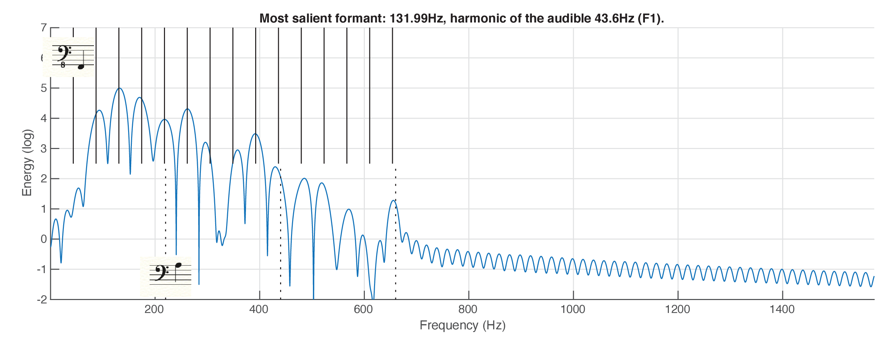

A.1Hyper Music's Luc Leroy working with BassNet on "Melatonin". BassNet's web interface is visible on the right. Exported files from the web interface are visible on the left. BassNet's files are imported and arranged in the bottom Pro Tools session.A.2Elements from the DAW session are provided as an input to BassNet. These elements condition the output, which is processed and integrated into the DAW session.A.3Hyper Music, "Melatonin" — Final ResultA.4Section 1 of “Melatonin” features 9 BassNet outputs, which can be grouped into four parts. Top: Relations between outputs inside parts are doubling, timbral enrichment, and heterophony (one output can be described as a variation of the other). Bottom: Transcriptions of all BassNet parts in the section, aligned with the corresponding audio.Click on numbered elements in the figure to hear the corresponding audioA.5Section 2 of “Melatonin” features 6 BassNet outputs, which can be grouped into three parts. Top: Relations between outputs inside parts are doubling and heterophony. Bottom: Transcriptions of all BassNet parts in the section, aligned with the corresponding audio.Click on numbered elements in the figure to hear the corresponding audio
Appendix B: Harmonic variation in sinusoidal synthesis
Let \( a_i \) be the amplitude of the \( i \)-th harmonic as inferred from the CQT frame (the fundamental being \( a_1 \)). Furthermore, let \( \lambda \in [0, \lambda_{max}] \) be the desired strength of the harmonic variability (we use \( \lambda_{max} = 10 \)). Lastly, weight coefficients \( w_i \) are defined such that \( w_1 = 0.8 \) , \( w_2 = 0.9 \) , and \( w_{>2} = 1.0 \) , countering the tendency of the non-linearity to over-emphasize the lowest harmonics.
The non-linear amplitude is defined as:
\[
s_i = \sigma(\lambda a_i w_i),
\]
where \( \sigma \) is the softmax function. The final amplitude is a weighted combination of the original amplitude and the non-linear amplitude:
\[
v_i = (1-\frac{\lambda}{\lambda_{max}}) a_i + \frac{\lambda}{\lambda_{max}} s_i
\]
Appendix C: Heterophony between Bass Lines
C.1Sound examples for Figure 2 (top) in the paper
"Bass C1" + "Bass C2" before effects
"Bass C1" + "Bass C2" after effects
C.2Sound examples for Figure 2 (bottom) in the paper
"Bass D1" + "Bass D2" before effects
"Bass D1" + "Bass D2" after effects
Appendix D: Examples of simultaneous pitches within bass lines
The song ``The Holy Hour'' by British band The Cure is the first track on their 1981 album ``Faith'', released with Fiction Records. The song starts with a 16-beat long solo bass part. Audition of the extract suggests two melodic lines. The bottom-most line is likely to correspond to the notes that were actually played on the instrument. The line is transcribed as a score show below. The top-most line is perceived as continuously varying pitch. The figure below the score shows that the perceived played notes are partially detected by the deep convolutional neural network-based, pitch estimation model CREPE [Kim et al., 2018].
The third figure shows a Short-Term Fourier Transform of the extract, along with the perceived played notes. One feature of STFT is a sliding comb filter on the higher frequencies. Flanging is an audio effect produced by mixing two identical signals together, one signal delayed by a small and gradually changing period. The sliding comb filter is likely to be generated by a Flanger. One stimulus used in pitch perception is iterated rippled noise. Such a stimulus is generated by delaying a random noise by some amount and adding the delayed noise back to the undelayed noise in an iterative process [Yost, 2009]. The comb filter generated by a Flanger may therefore prompt perceived gradually changing pitch in the result. The last figure shows how the autocorrelation-based pitch estimation model MirPitch [Lartillot, 2008] interprets part of the resonances produced by the comb filter as pitch.
The extract from ``The Holy Hour'' is generated by one instrument, on which one note is played. Still, two simultaneous melodic lines can be identified. The first line originates from the notes that are actually played, the second line originates from the sliding comb filter. It is difficult to transcribe pitch from the second line as a score, as the pitch values evolve continuously.
Perceived played notes in the extract from The Holy Hour.The Holy Hour, pitch detection, CREPE. (using Viterbi smoothing). The fundamental frequencies corresponding to the perceived played notes are shown in blue. The estimation error in the played notes near seconds 1 and 6 are likely to derive from a long release from the previous note.The Holy Hour, short-term Fourier transform. The fundamental frequencies corresponding to the perceived played notes are shown in blue. The parabolic shapes visible in the upper spectrum are likely to originate from the use of a flanger.The Holy Hour, pitch detection, MirToolBox’s MirPitch, default settings. Around seconds 5 and 7, the pitch detection appears to follow the flanger’s modulation.
The song ``Bloodstone'' by British band Judas Priest is the fourth track on their 1982 album ``Screaming for Vengeance''. The bass track is available to the authors through the ``Rock Band'' game franchise of Sony Interactive. The score below shows a transcription of the bass track from 1'10 to 1'15. The transcription features two staves. The bottom stave shows the notes that are perceived as actually played. The top stave shows notes that are perceived in addition to those actually played. The figure below the score shows the short-term Fourier transform of the audio corresponding to the transcribed bass track. Examination of the transform shows that 1) the fundamental is missing, and 2) the additional perceived notes generally correspond to harmonics 6 and 7.
In this case the difference in perceived pitches seems to coincide to with the up- and downward motion of the plectrum plucking the string, where the higher pitches coincide with the upward motion.
A possible explanation for this is the difference in string tension during the plucking action.
This effect is present in guitar playing as well.
Furthermore, the equalization of the track may make the effect more pronounced.
Judas Priest, ``Bloodstones'', 1'10 to 1'16. The bottom stave shows a transcription of the notes that are perceived as actually played. The top stave shows another perceived melodic line.Judas Priest, ``Bloodstones'', 1'10 to 1'16, short-term Fourier transform. The blue lines show the frequency corresponding to the transcription in the figure above. The white dotted lines show the fundamental and harmonics of the notes that are perceived as actually played.
This example is from the song ``Epic'' by American band Faith No More. ``Epic'' is the second single from their 1990 album ``The Real Thing''. The bass track is available to the authors through the ``Rock Band'' game franchise. The score below shows a transcription of the two simultaneous perceived melodic line in the bass track from 1'58 to 2'05. The pitch in the top stave is always one octave above the pitch in the bottom stave, and the parts are exactly synchronised. We believe this to be a consequence of doubling the original bass part with a distorted version of the same part.
Faith No More, ``Epic'', bass part, 1'58 to 2'05. The bottom stave shows a transcription of the notes that are perceived as actually played. The top stave shows notes that are likely to be generated by a pitch-shifter.
Appendix E: Homophony within Bass Lines
This appendix provides additional data related to Figure 3 in the paper.
The figure below reproduces Figure 3, along with the corresponding audio excerpts and the short-time Fourier spectrogram.
The figure is followed by a number of annotated short-time Fourier spectra at different times during the excerpt.
The numbered vertical lines in the score show the position of each of the spectra in the excerpt.
E.1Melatonin, Section 2, "Solo 1", bars 82–83.
Top: transcription of perceived notes. Vertical lines show the locations of the spectral analyses in following figures.
Middle: Sound excerpts.
Bottom: Short-time Fourier spectrogram.
The transcription and spectrogram correspond to the sound excerpt before effects.
Track Solo 1 (bars 82–83) Section 2 (before effects)
Track Solo 1 (bars 82–83) Section 2 (after effects)
The following figures show the short-time spectra at positions indicated by the numbered vertical lines in the transcription. Some observations about the selected spectral slices:
In all the slices, odd harmonics are more salient than even ones. This is due to the artists' preferred choice of odd/even sonification control (see paper).
In all the slices, the fundamental is missing, and the lowest harmonic is odd. This is due to the weighting of the lowest harmonics as part of the "harmonic variation" sonification control (see paper).
In slices 1, 2, 3, 5, 7 and 8, the additional perceived pitch value corresponds to harmonic 3.
In slice 6, it corresponds to harmonic 5.
In slices 4 and 9, it doesn't correspond to a harmonic.
In slices 2, 3, 5, 7, 8 and 9, the additional perceived pitch value corresponds to the loudest formant.
In slices 1, 4 and 6, other formants which are not the fundamental are louder.
[Slice 1 (Frame 3)]. Top solid vertical lines: harmonic frequencies derived from the first two formants, considering that only odd harmonics are generated. Bottom dotted vertical lines: audible missing fundamental with its harmonics. The audible notes are F2 (the missing fundamental) and C4 (the first formant).[Slice 2 (Frame 35)] Top solid vertical lines: harmonic frequencies derived from the first two formants, considering that only odd harmonics are generated. Bottom dotted vertical lines: audible missing fundamental with its harmonics. The audible notes are G2 (the missing fundamental) and D4 (the first formant).[Slice 3 (Frame 48)] Top solid vertical lines: harmoni frequencies derived from the first two formants, considering that only odd harmonics are generated. Bottom dotted vertical lines: audible missing fundamental with its harmonics. The audible notes are G2 (the missing fundamental) and D4 (the first formant).[Slice 4 (Frame 64)] Top solid vertical lines: first formant and multiple frequencies. The corresponding note cannot be heard. Middle solid vertical lines: second formant (Bb3) and multiple frequencies. Bottom, frequencies corresponding to an audible note that’s difficult to derive from the spectrogram (G1). The audible notes are Bb3 and G1.[Slice 5 (Frame 78, similar to frame 35)] Top solid vertical lines: harmonic frequencies derived from the first two formants, considering that only odd harmonics are generated. Bottom dotted vertical lines: audible missing fundamental with its harmonics. The audible notes are G2 (the missing fundamental) and D4 (the first formant).[Slice 6 (Frame 90)] Top solid vertical lines: harmonic frequencies derived from the most salient formant. Bottom dotted lines: frequencies corresponding to an audible note that’s difficult to derive from the spectrogram. The audible notes are F1 and C4.

[Slice 7 (Frame 104, similar to frame 35)] Top solid vertical lines: harmonic frequencies derived from the first two formants, considering that only odd harmonics are generated. Bottom dotted vertical lines: audible missing fundamental with its harmonics. The audible notes are G2 (the missing fundamental) and D4 (the first formant).[Slice 8 (Frame 107, similar to frame 3)]. Top solid vertical lines: harmonic frequencies derived from the first two formants, considering that only odd harmonics are generated. Bottom dotted vertical lines: audible missing fundamental with its harmonics. The audible notes are F2 (the missing fundamental) and C4 (the first formant).[Slice 9 (Frame 113)]. Top solid vertical lines: harmonic frequencies derived from the first two formants, considering that only odd harmonics are generated. Bottom dotted vertical lines: audible missing fundamental with its harmonics. The audible notes are Eb4 and B1/Cb2.